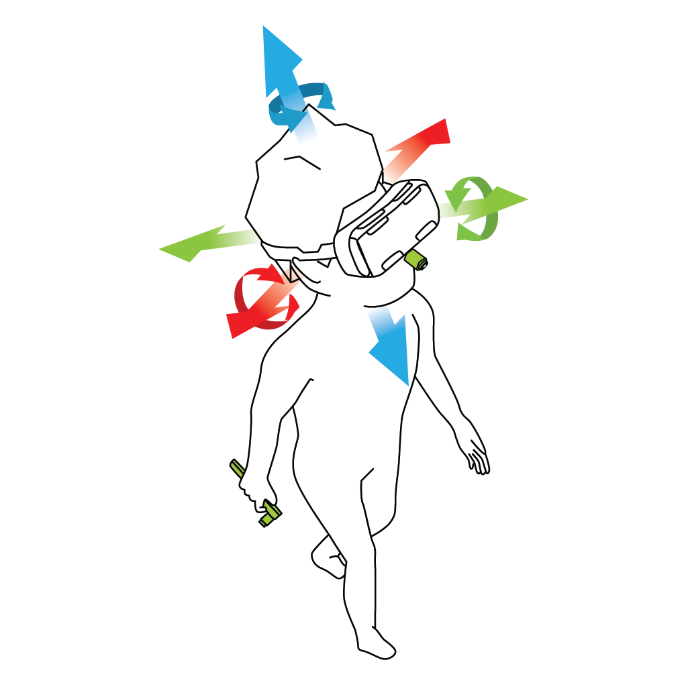

ZVOKZa izboljšanje poglobljene izkušnje VR uporabljaja različne zvočne tehnologije: Prostorski zvok: VR uporabljaja tehnike prostorskega zvoka za ustvarjanje realistične zvočne pokrajine. Zvoki so umeščeni v 3D prostor, kar zagotavlja občutek globine in usmerjenosti, kar poveča celotno potopitev. 3D zvočni učinki: S simulacijo interakcije zvočnih valov z ušesi uporabnika slušalke VR ustvarijo natančen občutek globine in razdalje zvoka, s čimer povečajo realističnost. I ntegrirani avdio sistemi: Številne slušalke VR imajo vgrajene zvočnike ali slušalke za zagotavljanje visokokakovostnega zvoka neposredno uporabniku, kar odpravlja potrebo po zunanjih zvočnih sistemih. Prilagodljive zvočne nastavitve: Uporabniki lahko pogosto prilagodijo zvočne nastavitve, da ustrezajo njihovim željam, vključno z glasnostjo, izenačevanjem in ravnovesjem, kar izboljša njihovo splošno udobje in potopitev. |

|
|---|---|
|

|
SENZORJISenzorji igrajo ključno vlogo pri sledenju uporabnikovim gibanjem in dejanjem v virtualnem okolju: Sledenje glavi: slušalke VR uporabljajo senzorje žiroskopa, merilnika pospeška in magnetometra za natančno sledenje premikom glave uporabnika. To omogoča, da se virtualno okolje odzove v realnem času, kar ustvarja brezhibno in naravno izkušnjo. Sledenje položaju: Napredni sistemi VR uporabljajo dodatne senzorje, kot so zunanje kamere ali infrardeči senzorji, za spremljanje položaja uporabnika v prostoru. To uporabnikom omogoča fizično premikanje v virtualnem okolju in dodaja novo raven potopitve. Sledenje rokam: nekatere slušalke VR ponujajo zmožnosti sledenja rokam, kar odpravlja potrebo po ročnih krmilnikih. Uporabniki lahko komunicirajo z virtualnim svetom z naravnimi kretnjami rok, kar poveča občutek prisotnosti in interaktivnosti. |